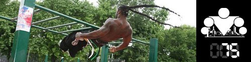

Поскольку мы начали эту неделю с разговора о новых упражнениях, я думаю, что вполне логичным будет смотреться инфо-пост в котором мы систематизируем различные популярные упражнения по группам мышц и уровню сложности.
(Мы пока не уделяли вообще никакого времени графическому представлению этой информации, хотя можно всё очень красиво отрисовать в виде иконок и будет просто зашибись, но пока так.)
Как я уже написал выше, для удобства мы решили разделить все упражнения по 2-м направлениям, во-первых по сложности, а во-вторых по основной группе мышц, которая в них задействуется. В итоге мы выделили 5 мышечных групп: грудь, спина, пресс, ноги и руки. И вот что у нас получилось (классификация примерна, будет круто получить ваши отзывы на неё!):
Уровень I:
- Отжимания с коленей
- Отжимания с коленей с широкой постановкой рук
- Отжимания с коленей с узкой постановкой рук
Уровень II:
- Отжимания от пола
- Отжимания с опорой на одну ногу
Уровень III:
- Отжимания с хлопком
- Отжимания Bar-tendaz
Уровень IV:
- Отжимания на брусьях
- Отжимания от турника
Уровень V:
- Отжимания на брусьях с хлопком
- Русские отжимания на брусьях
Уровень I:
- Австралийские подтягивания
- Подтягивания на брусьях
Уровень II:
- Подтягивания на турнике
- Подтягивания хватом снизу
- Подтягивания разнохватом
- Подтягивания узким хватом
- Подтягивания широким хватом
Уровень III:
- Высокие подтягивания
- Подтягивания к коленям
Уровень IV:
- Плиометрические подтягивания
- Подтягивания с хлопком перед собой
Уровень V:
- Подтягивания с хлопком за спиной
- Подтягивания с касанием носков
Уровень VI:
- Передний вис
- Задний вис
- Подтягивания в переднем висе
- Подтягивания в заднем висе
Уровень I:
- Подъёмы на носки
- Подъёмы на носки на одной ноге
Уровень II:
- Стульчик у стены
Уровень III:
- Приседания
Уровень IV:
- Приседания с выпрыгиваниями
- Выпады
- Выпады в стороны
Уровень V:
- Приседания на одной ноге
- Пистолетики
Уровень I:
- Трицепсовые разгибания
- Трицепсовые отжимания от пола
- Плиометрические отжимания
Уровень II:
- Алмазные отжимания
- Отжимания с хлопком за ногой
- Ацтекские отжимания
- Выход силой
Уровень III:
- Выход силой узким хватом
- Выход силой широким хватом
Уровень IV:
- Трицепсовые разгибания одной рукой
- Медленный выход силой
Уровень V:
- Отжимания в стойке на руках
- Impossible на брусьях
Уровень VI:
- Выход силой нижним узким хватом
Уровень VII:
- Выход силой нижним скрестным хватом
Уровень I:
- Планка
- Боковая планка
Уровень II:
- Подъёмы корпуса
- Ножницы
Уровень III:
- Уголок на турнике
- Уголок на брусьях
Уровень IV:
- Подъёмы ног к турнику
- Книжечка
Уровень V:
- Дворники
P.S. Приведенные выше упражнения являются базовыми и не предназначены для того, чтобы подготовить вас к выполнению сложных элементов продвинутого уровня (передний/задний висы и т.д.). Для этого лучше воспользоваться соответствующими обучающими видео